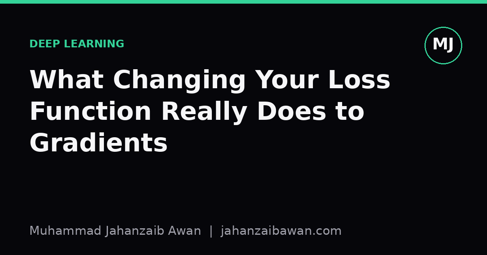
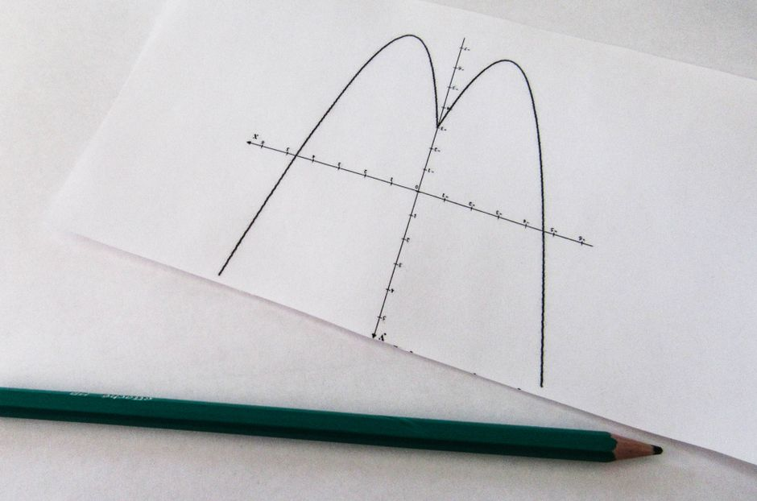

What Changing Your Loss Function Really Does to Gradients
Swapping one loss for another is often sold as a free lunch, but the real effect shows up in the gradients it produces. A tiny worked example makes this concrete.

Why this matters more than it looks
When people talk about choosing a loss function, the conversation usually stays at the level of formulas: mean squared error versus cross entropy, hinge loss versus log loss, and so on. That framing hides the actual mechanism by which a loss function influences a trained model. A loss is never evaluated in isolation. It is differentiated, and that derivative is what gets multiplied through the network during backpropagation. Two losses can look similar on paper and produce wildly different training dynamics simply because their gradients behave differently near the predictions a model is likely to make.
I find it useful to stop thinking of a loss as a scoring rule and start thinking of it as a gradient generator. The number the loss outputs barely matters during training; what matters is the slope at the current prediction, because that slope is the signal every parameter update is built from. If you change the loss, you are not changing how harshly you punish a bad prediction in the abstract. You are changing how hard the model gets pushed, and in which direction, for every single example in the batch.
A toy example strips away the noise of real datasets and lets you see this directly. I will use a single scalar prediction problem: one output, one target, and two candidate losses, so that every number can be computed by hand and the contrast is unmistakable.
The toy setup
Suppose a model outputs a single probability-like value p for a binary target y, produced by squashing a raw logit z through a sigmoid. Let the true label be y = 1. I will compare two losses as functions of p: squared error, L = (y - p)^2, and binary cross entropy, L = -log(p) for a positive target.
Take a case where the model is badly wrong: p = 0.01, meaning it is almost certain the answer is 0 when the true label is 1. For squared error, the gradient with respect to p is -2(y - p) = -2(1 - 0.01) = -1.98. For cross entropy, the gradient is -1/p = -1/0.01 = -100. That is a factor of roughly fifty between the two signals, for the exact same prediction and the exact same mistake.
Now take a case where the model is only mildly wrong: p = 0.4. Squared error gives -2(1 - 0.4) = -1.2. Cross entropy gives -1/0.4 = -2.5. The gap has shrunk from fifty times to about two times. This is the core fact worth internalising: cross entropy's gradient explodes as a confidently wrong prediction approaches the wrong extreme, while squared error's gradient stays bounded and fairly flat across the whole range of p.
When you push these gradients back through the sigmoid, the effect compounds. The sigmoid's own derivative, p(1 - p), is tiny when p is near 0 or 1, which squashes gradients for confident predictions. Cross entropy's -1/p term cancels a large part of that squashing near the bad end, while squared error does not, which is why cross entropy famously avoids the vanishing gradient problem that plagues squared error on classification tasks with sigmoid outputs.

What this buys you, and what it costs
The practical upshot is that cross entropy keeps teaching the model aggressively even when it is extremely confident and extremely wrong, exactly the regime where you most want a strong corrective signal. Squared error, by contrast, treats a confidently wrong prediction almost the same as a mildly wrong one, because its gradient is roughly linear in the error and never blows up. For classification problems this usually makes cross entropy converge faster and more reliably, which is why it is the default choice almost everywhere a sigmoid or softmax sits at the output.
But the same property that makes cross entropy attractive also makes it less forgiving of label noise and poorly calibrated confident mistakes during early training. If a handful of training examples are mislabelled, and the model happens to become confident on the wrong side, the gradient contribution from those examples can dominate the batch, because -1/p grows without bound as p approaches zero. Squared error's bounded gradient acts as an implicit form of robustness: a single badly wrong, mislabelled example cannot generate an arbitrarily large update, because the gradient magnitude is capped by the range of the target and prediction.
This is also why loss functions are rarely swapped in isolation without touching other hyperparameters. If you move from squared error to cross entropy without adjusting the learning rate, you can inherit gradients that are an order of magnitude larger on hard examples, which in practice often means the first few epochs look unstable or the loss spikes before settling. Conversely, moving the other way, from cross entropy back to squared error, frequently looks like training has stalled, because the gradients for genuinely hard examples are no longer being amplified.
None of this is a reason to treat loss choice as fragile or arbitrary. It is a reason to actually plot the gradient of a candidate loss as a function of the prediction before adopting it, rather than relying on the formula's reputation. A five minute derivative check against a toy example like the one above tells you more about how a loss will behave during training than any amount of reading about which loss is theoretically more appropriate for a task.
A practical takeaway
Whenever a loss function change is proposed, whether it is swapping squared error for cross entropy, or cross entropy for a focal loss variant, or anything else, I now default to writing out the derivative with respect to the model's output and evaluating it at a few representative prediction values: very wrong, mildly wrong, and nearly correct. That small exercise reveals whether the new loss amplifies hard examples, suppresses them, or leaves them roughly unchanged relative to the old one, and that is almost always the real reason a loss swap changes training behaviour, rather than anything to do with the loss values themselves.
If you take one thing from this, let it be that a loss function's job is to shape a gradient landscape, not to produce an interpretable score. Reading the formula tells you what is being measured. Differentiating it tells you what the model is actually going to do about it, and that second question is the one worth answering before you commit to a change.
